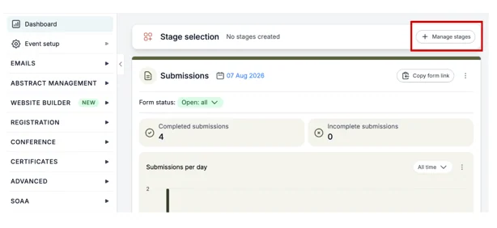
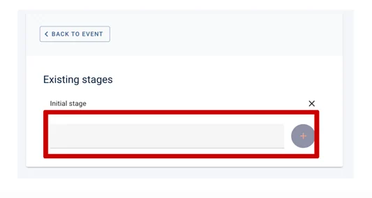
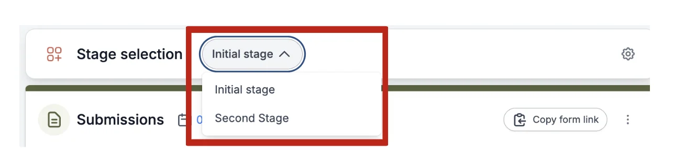
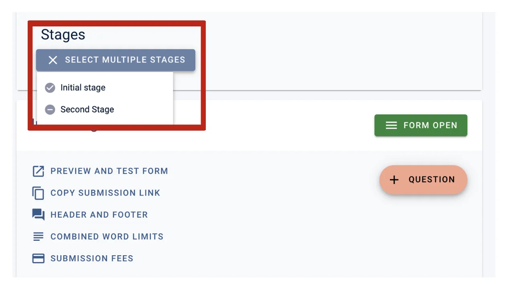
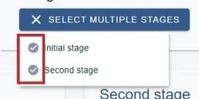
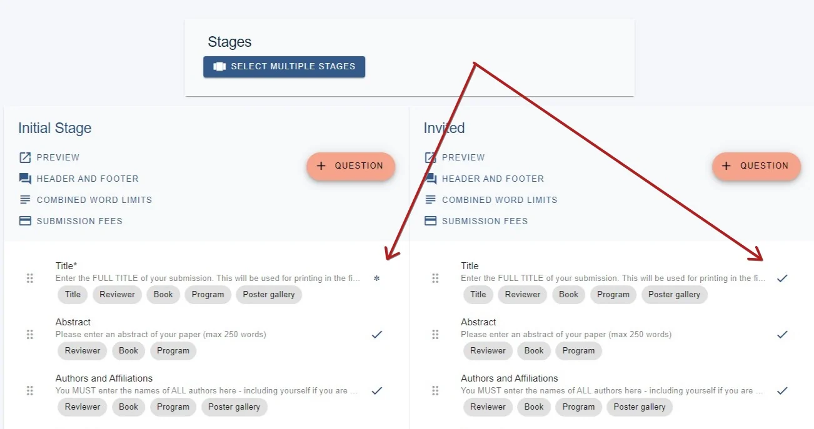
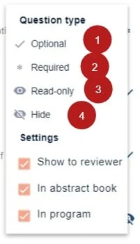
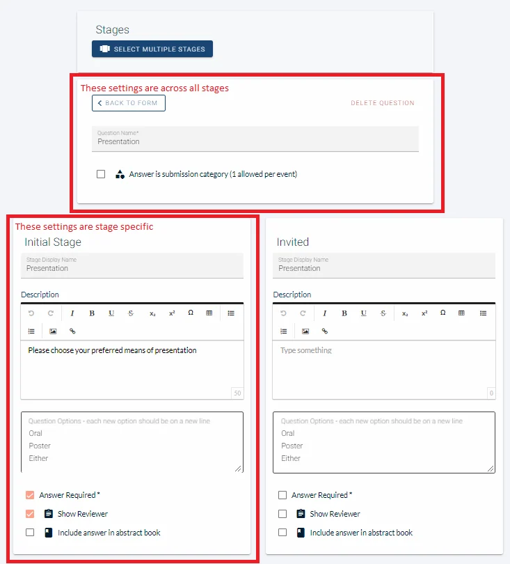

Creating Multi-stage submission forms
For event organisersNot an organiser?
Creating forms for a multi-stage event is very similar to a single stage event, but there are a few differences that you should be aware of before you set up your submission forms.#
NB: It is advisable that you familiarise yourself with the Submission form first.
Go to the Event dashboard.
On your dashboard at the top, you'll see a section named Stage Selection.
If you need to create your following stages, then click on the button that says Manage stages.

Then add your next stage name into the grey box and click the plus button.

Now return to your dashboard.
To set up the submission forms for the stages, ensure you are in the correct stage first, by selecting the stage you require.

Then navigate to Abstract Management → Submissions → Form & Setup
From here you can edit the submission questions for one or for multiple stages.
NB: All submission questions will be in all stages. This means that if you delete a question in one stage, it will also be deleted in the other stage(s). Instead, you can control whether or not questions are visible to the submitter and whether or not they are read-only.
Click on the Stage dropdown at the top of the screen to select the stages that you want to work on. In the example below you can see two stages Initial Stage and Second stage.

You can work on both simultaneously if you wish, by ensuring both options are selected.

Both options are displayed in the image below. You will see the two submission forms side by side. You can (independently in each stage) set the visibility of each question using the icons shown below.

Clicking on the icon will reveal the following options.

1) Select this if you wish the question to be visible and optional
2) Select Required if a response to the question is mandatory.
3) Select if you wish to be read-only (eg - response to the prevous stage should be shown but not editable).
4) Select if you wish to hide (eg - a response not required in the second stage.)
Guidance to the lower half of this panel can be found in Question tags.
Click on any question to edit the question, as you would in a single stage event.
Most questions on the submission form have elements that have to be the same in all stages, shown at the top of the screen, and settings that are specific to a stage, show at the bottom of the screen.
For instance, the question below is the Presentation one. At the top, the settings are across all stages. In this case -thequestion name,and the checkboxAnswer is submission category.
The other elements of the question, eg- Stage Display Name, Descriptionetc, are specific to each stage, so they can differ.
You will also see that a response is required, and the response will be shown to the reviewer in the Presentation question in the Initial Stage, but not in the Invited Stage.
Make the changes you require and click on BACK TO FORMnear the top of the screen.

Didn't solve it? Ask our support team
No question is too small, and there's no charge for asking. Raise a ticket and someone who knows the software will pick it up.
Did this page solve it?
Thanks — this helps us fix it.